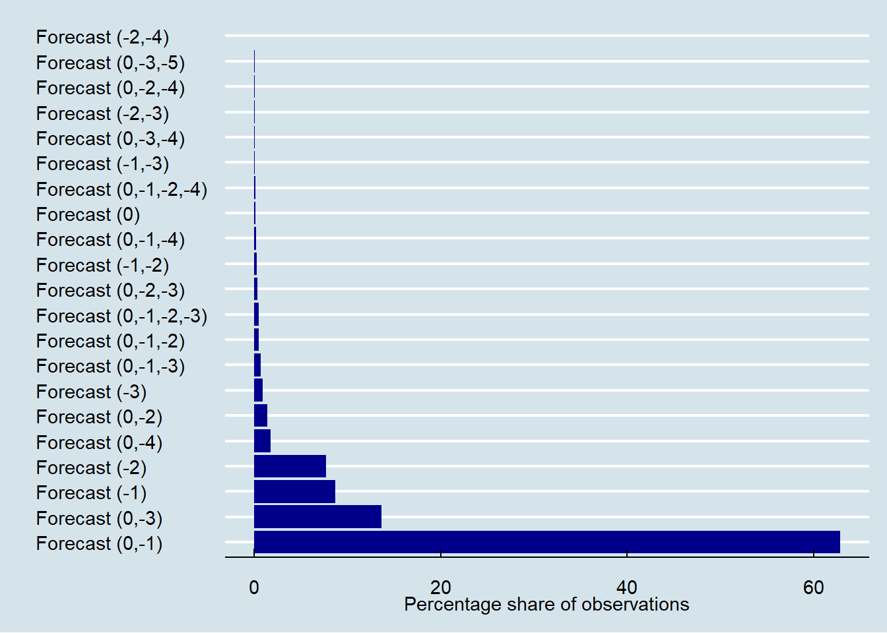
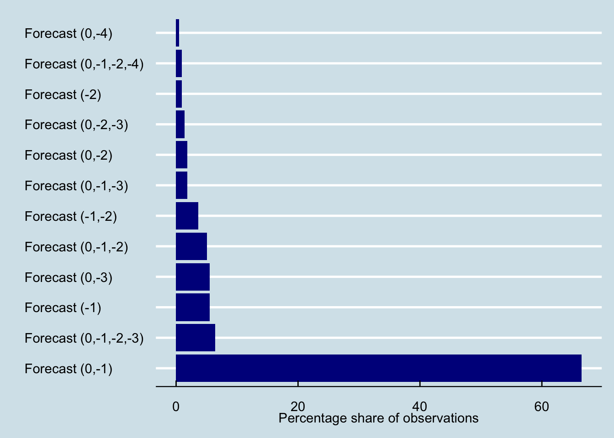

This page presents an overall description of the data sets I use to analyze the effect of New York City Air Quality Health Advisories on school absences.
Researchers can access the data I use to generate these files in the dropbox repository
Data on School Absences
The following code-chunk only loads into the R-environment the data files of school absences, schools’ locations, and neighborhood-level demographics I use throughout the study.
Show the Code
# Set the path of the R-studio projectfile =gsub("AQAs_SchoolAbsences_NYC", "", getwd())# Load the data setRawAbsent =read_rds(paste0(file, "02_GenData/RawAbsences.rds"))location =read_rds(paste0(file,"02_GenData/01_schools/location.rds"))dem =read_rds(paste0(file,"02_GenData/SchoolDemographics.rds"))prof =read_rds(paste0(file,"02_GenData/proficiency.rds"))
We obtain data on school absences from the NYC open data-portal website. Table 1 shows the structure of the data. There are 3,339,158 observations in the panel with 1,854 unique school identifiers. The data set spans between Jan 2006 and Dec 2018.
The data contains the school’s id, the observation date, and the total number of enrolled, present, absent, and released students. It further includes a categorical variable indicating if an abnormal event affected school absences on that date, e.g., extreme weather events like blizzards or hurracaines.
Show the Code
# Show the data setkbl(head(select(RawAbsent, id:released, DayType), 3)) %>%kable_classic(full_width = T, html_font ="Cambria") %>%kable_styling(bootstrap_option =c("hover")) |>column_spec(c(1), italic = T, color ="DarkBlue") %>%footnote(general ="id = School id, enrolled = Number of enrolled students in that period, present = Number of present students on that date, absent, Number of Absent Students, released = Number of released students, DateType = Categorical variable indicating abnormal events, it can contain one of seven values; Normal Day, Administered Reagents Exam for Highschools, Highschool Holidays, Chancellors Conference Day, Weather Event, and June Clerical Half Day.", general_title ="Notes:", footnote_as_chunk = T)
Table 1: Structure of the raw file on school absences in NYC
id
date
SchoolYear
enrolled
present
absent
released
DayType
01M015
2006-09-05
2006-2007
252
226
26
0
NormalDay
01M015
2006-09-06
2006-2007
248
227
21
0
NormalDay
01M015
2006-09-07
2006-2007
245
228
17
0
NormalDay
Notes: id = School id, enrolled = Number of enrolled students in that period, present = Number of present students on that date, absent, Number of Absent Students, released = Number of released students, DateType = Categorical variable indicating abnormal events, it can contain one of seven values; Normal Day, Administered Reagents Exam for Highschools, Highschool Holidays, Chancellors Conference Day, Weather Event, and June Clerical Half Day.
Next, I obtain data on the location of each school in NYC. The location data file (Table 2) contains the school’s type, id, longitude, latitude, tract, neighborhood, and borough. There are eight school types: Elementary, K-8, Secondary School, Junior High, High school, K-12 all grades, Early Childhood, Ungraded
Show the Code
# Show the data setkbl(head(location, 2)) %>%kable_classic(full_width = T, html_font ="Cambria") %>%kable_styling(bootstrap_option =c("hover")) |>column_spec(c(1), italic = T, color ="DarkBlue") |>footnote(general ="lon = Longitude, lat = Latitude, tract = US Census Tract, nta = neighborhood, boro = borough, SchholType = type of school", general_title ="Notes:", footnote_as_chunk = T)
Table 2: Data on the spatial location of schools in NYC
id
lon
lat
tract
nta
ntacode
boro
SchoolType
01M015
-73.97875
40.72207
002601
Lower East Side
MN28
Manhattan
Elementary
01M019
-73.98450
40.73001
004000
East Village
MN22
Manhattan
Elementary
Notes: lon = Longitude, lat = Latitude, tract = US Census Tract, nta = neighborhood, boro = borough, SchholType = type of school
Table 3 shows socio-demographic data for each school obtained from the New York State Department of Education (NYSDE). It contains the school’s id, year of observation, count of enrolled students, and the share of female, male, Asian, Hispanic, Black, and White students. Additional variables include the share of students with disabilities, learning English, qualifying for free or reduced price lunch, being eligible for Human Resources Administration benefits (poverty), or facing economic hardship (eni).
Show the Code
# Show the data setkbl(head(dem, 2)) %>%kable_classic(full_width = T, html_font ="Cambria") %>%kable_styling(bootstrap_option =c("hover")) |>column_spec(c(1), italic = T, color ="DarkBlue") %>%footnote(general ="id refers to School ID and students to the count of enrolled students in that school and year combinations. Each of the other columns contains the percentage of students within each category, e.g., female refers to the share of female students in the school. The poverty column refers to the share of students qualifying for free or reduced-price lunch or eligible for Human Resources Administration benefits. The eni column refers to the share of students facing economic hardship.", general_title ="Notes:", footnote_as_chunk = T)
Table 3: Demographic data for NYC schools
id
year
students
female
male
asian
hispanic
black
white
other
disabilities
EnglishLearners
poverty
eni
01M015
2011
189
48.7
51.3
6.3
57.7
33.3
2.1
0.5
27.5
11.6
100
NaN
01M015
2012
177
51.4
48.6
8.5
52.5
35.6
1.7
1.7
31.1
11.9
100
NaN
Notes: id refers to School ID and students to the count of enrolled students in that school and year combinations. Each of the other columns contains the percentage of students within each category, e.g., female refers to the share of female students in the school. The poverty column refers to the share of students qualifying for free or reduced-price lunch or eligible for Human Resources Administration benefits. The eni column refers to the share of students facing economic hardship.
Finally, we obtain data on students’ mathematical and writing proficiency. Table Table 4 contains the school id, the year of observation (only available from 2014), the share of students passing the English Language Art (ELA) and Mathematics (math) tests, and the percentage of fourth-year and sixth-year graduates.
Show the Code
# Show the data setkbl(head(prof, 2)) %>%kable_classic(full_width = T, html_font ="Cambria") %>%kable_styling(bootstrap_option =c("hover")) |>column_spec(c(1), italic = T, color ="DarkBlue") %>%footnote(general ="id refers to School ID and. Each of the other columns contains the percentage of students within each category; e.g., ela refers to the share of students passing the English Learning Art test. The math column refers to the share of students passing the Mathematics test. And the Graduates4th and 6th columns refer to the share of graduates in each year respectively.", general_title ="Notes:", footnote_as_chunk = T)
Table 4: Proficiency data for NYC schools
id
year
ela
math
Graduates4th
Graduates6th
17K002
2014
23.1
23.1
NA
NA
84K704
2014
16.7
16.7
NA
NA
Notes: id refers to School ID and. Each of the other columns contains the percentage of students within each category; e.g., ela refers to the share of students passing the English Learning Art test. The math column refers to the share of students passing the Mathematics test. And the Graduates4th and 6th columns refer to the share of graduates in each year respectively.
Data on the forecasts of the air quality index
The following code-chunks load the data related to the air quality alerts’ measures and forecasts.
Show the Code
# Load the AQI data setsRawAqi =read_rds(paste0(file, "02_GenData/02_aqi/RawAqi.rds"))Full =read_rds(paste0(file, "02_GenData/02_aqi/RawAqiFull.rds"))AqiForecast =read_rds(paste0(file, "02_GenData/02_aqi/AqiForecast.rds"))
The data on the air quality index (AQI) forecasts come from the New York State Department of Environmental Conservation (NYSDEC).1 The data file contains the issue date, forecast date, forecast period, and forecasted value of ozone (o3), fine particulate matter (pm25), and the air quality index (AQI). The issue date is the date the NYSDEC estimated the forecast, and the forecast period is the difference between the issue and forecast dates. It can take five different values; Next Day, 2 Day, Same Day, 3 Day, 4 Day, 5 Day.
Important
It is relevant to distinguish between the issue and forecast dates. The issue date is the date that the NYSDEC performs the forecast. the forecast date is the date of the forecast. For instance, the NYSDEC can forecast an AQI value of 105 for May 1st on April 29th. In this example, April 29th is the issue date, and May 1st is the forecast date. It is worth noting that forecasts can have different issue dates. For instance, there can be three forecasts for January 1st.
Show the Code
# Show the data setkbl(head(RawAqi, 2)) %>%kable_classic(full_width = T, html_font ="Cambria") %>%kable_styling(bootstrap_option =c("hover")) |>column_spec(c(1), italic = T, color ="DarkBlue") %>%footnote(general ="IssueDate is the date of issue of the forecast, ForecastDate is the forecasted date. ForecastPeriod is the difference between the issue and forecast dates. o3 is the forecasted AQI value of atmospheric ozone. pm25 is the forecasted AQI value of fine particulate matter. aqi is the forecasted AQI value", general_title ="Notes:", footnote_as_chunk = T)
Table 5: Raw data on the Air Quality Index
IssueDate
ForecastDate
ForecastPeriod
o3
pm25
aqi
2007-12-31
2008-01-01
Next Day
NA
65
65
2007-12-31
2008-01-02
2 Day
NA
40
40
Notes: IssueDate is the date of issue of the forecast, ForecastDate is the forecasted date. ForecastPeriod is the difference between the issue and forecast dates. o3 is the forecasted AQI value of atmospheric ozone. pm25 is the forecasted AQI value of fine particulate matter. aqi is the forecasted AQI value
Next, we include a set of indicator variables to understand the relationship between the forecasts and the air quality alerts. The ultimate goal is to assign a single AQI forecast to each date between 2008 and 2018.
In Table 6, I essentially keep the same structure of Table 5 with the slight difference that I change the forecast period by a numeric variable equivalent to the difference between the issue and forecast dates.
Next, in Table 7, I construct a series of dummy and categorical variables to understand the nature of each forecast. The column SingleForecast indicates situations when only one issued forecast for that particular date exists. For example, if there were two forecasts for January 1st, one on December 30th and the other on the 31st, the value of this column would be equal to zero. The ForecastType is a categorical variable that indicates the structure of issued forecasts for that particular date, e.g., Forecast (0, -2) means that there was a forecast issued at \(t = 0\) and \(t = -2\). The SameDay variable is equal to one if the issue and forecast dates occur on the same day. The same logic holds for NextDay, TwoDays, ThreeDays, and FourDays. For instance, a value of 1 in the FourDays column occurs when the issue date is four days before the forecast.
# Show the data setkbl(head(select(Full, IssueDate:aqi), 2)) %>%kable_classic(full_width = T, html_font ="Cambria") %>%kable_styling(bootstrap_option =c("hover")) |>column_spec(c(1), italic = T, color ="DarkBlue") %>%footnote(general ="IssueDate is the date of issue of the forecast Forecast date is the date t.of the alert. ForecastPeriod is the difference between the issue and forecast dates. o3 is the forecasted AQI value of atmospheric ozone. pm25 is the forecasted AQI value of fine particulate matter. aqi is the forecasted AQI value to emit the alert", general_title ="Notes:", footnote_as_chunk = T)
Table 6: Raw data on the Air Quality Index
IssueDate
ForecastDate
EmissionLag
o3
pm25
aqi
2007-12-31
2008-01-01
-1
NA
65
65
2007-12-31
2008-01-02
-2
NA
40
40
Notes: IssueDate is the date of issue of the forecast Forecast date is the date t.of the alert. ForecastPeriod is the difference between the issue and forecast dates. o3 is the forecasted AQI value of atmospheric ozone. pm25 is the forecasted AQI value of fine particulate matter. aqi is the forecasted AQI value to emit the alert
Show the Code
# Show the data setkbl(head(select(Full, IssueDate:ForecastDate, aqi, SingleForecast, ForecastType, SameDay:FourDays), 2)) %>%kable_classic(full_width = T, html_font ="Cambria") %>%kable_styling(bootstrap_option =c("hover")) |>column_spec(c(1), italic = T, color ="DarkBlue") %>%footnote(general ="IssueDate is the date of issue of the forecast ForecastDate is the date of the alert. ForecastPeriod is the difference between the issue and forecast dates. o3 is the forecasted AQI value of atmospheric ozone. pm25 is the forecasted AQI value of fine particulate matter. aqi is the forecasted AQI value to emit the alert", general_title ="Notes:", footnote_as_chunk = T)
Table 7: Raw data on the Air Quality Index (Forecast Indicators)
IssueDate
ForecastDate
aqi
SingleForecast
ForecastType
SameDay
NextDay
TwoDays
ThreeDays
FourDays
2007-12-31
2008-01-01
65
1
Forecast (-1)
0
1
0
0
0
2007-12-31
2008-01-02
40
0
Forecast (0,-2)
0
0
1
0
0
Notes: IssueDate is the date of issue of the forecast ForecastDate is the date of the alert. ForecastPeriod is the difference between the issue and forecast dates. o3 is the forecasted AQI value of atmospheric ozone. pm25 is the forecasted AQI value of fine particulate matter. aqi is the forecasted AQI value to emit the alert
Show the Code
# Show the data setkbl(head(select(Full, IssueDate:ForecastDate, aqi, alert, FullAlert, SingleAlert:TwoDaysSingleAlert), 2)) %>%kable_classic(full_width = T, html_font ="Cambria") %>%kable_styling(bootstrap_option =c("hover")) |>column_spec(c(1), italic = T, color ="DarkBlue") %>%footnote(general ="IssueDate is the date of issue of the forecas Forecast date is the date t.of the alert. ForecastPeriod is the difference between the issue and forecast dates. o3 is the forecasted AQI value of atmospheric ozone. pm25 is the forecasted AQI value of fine particulate matter. aqi is the forecasted AQI value to emit the alert", general_title ="Notes:", footnote_as_chunk = T)
Table 8: Raw data on the Air Quality Index (Alert Indicators)
IssueDate
ForecastDate
aqi
alert
FullAlert
SingleAlert
OnlySameDayAlert
NextAndSameDayAlert
TwoDaysSingleAlert
2007-12-31
2008-01-01
65
0
0
0
0
0
0
2007-12-31
2008-01-02
40
0
0
0
0
0
0
Notes: IssueDate is the date of issue of the forecas Forecast date is the date t.of the alert. ForecastPeriod is the difference between the issue and forecast dates. o3 is the forecasted AQI value of atmospheric ozone. pm25 is the forecasted AQI value of fine particulate matter. aqi is the forecasted AQI value to emit the alert
Next, Table 8 includes a set of variables related to the emission of an air quality alert (AQA). The EPA and local environmental authorities emit AQAs when the value of the AQI is higher than one hundred units. With this in mind, the alert column is an indicator variable equal to one if the AQI forecast exceeds one hundred. The FullAlert column is also one when all forecasts on that date predict an AQA. SingleAlert is one if only one forecast is higher than one hundred units. OnlySameDayAlert is equal to one when there is only one same-day forecast, and NextAndSameDayAlert is equal to one if there were two issues for the same forecast – one on the date of the forecast and the other one day before.
Figure 1 and Figure 2 show the share of observations with specific combinations of issued forecasts. For the full sample 93% of forecasts were issued at \(t \in (0, -1)\), \(\$t \in (0, -3)\), \(t \in (-1)\), and \(t \in (-2)\). For the sub-sample of days with an air quality alert, 89% of the forecast are issued at \(t \in (0, -1)\), $t (0, -1, -2, -3) $, $t (-1) $, and \(t \in (0, -3)\).
# Create the plot dataplot = Full %>%group_by(ForecastType) %>%summarise(count =n()) %>%ungroup() %>%mutate(share = (count/sum(count))*100)# Ggplotggplot(plot) +geom_bar(aes(y =reorder(ForecastType, -share), x = share), stat ="identity", fill ="DarkBlue") +theme_economist() %+replace%theme(legend.title =element_blank()) +labs(x ="Percentage share of observations", y ="")

Figure 1: Forecast type across the full sample of forecasted AQIs
Show the Code
# Create the plot dataplot = Full %>%filter(alert ==1) %>%group_by(ForecastType) %>%summarise(count =n()) %>%ungroup() %>%mutate(share = (count/sum(count))*100)# Ggplotggplot(plot) +geom_bar(aes(y =reorder(ForecastType, -share), x = share), stat ="identity", fill ="DarkBlue") +theme_economist() %+replace%theme(legend.title =element_blank()) +labs(x ="Percentage share of observations", y ="")

Figure 2: Forecast type for the dates with an AQA
This combination of different forecasts raises one clear issue; if we want to assign one single value per date, which one should we choose? For this, use the following algorithm:
For the days without an alert, we select the AQI forecast closest to \(t\). For instance, if the AQI value for January 1st has one forecast on December 31st and another on December 30th, we select the 31st as the value of the forecasted AQI.
For days when there is an alert, and all forecasts imply an AQI value higher than 100 units, we choose the forecast closest to \(t\)
When there is a discrepancy between two forecasts regarding the existence of an AQA, we choose the highest. For instance, the forecast at \(t = 0\) implies an AQI value of 93 and the one at \(t = 1\) a value of 101. In this situation, we will assign the value of 101.
I use this algorithm to reach a final data set of forested AQI values. Table 9 shows the first rows of this final data file. In it date is the date of the forecast. ForecastType is the type of forecast as previously defined. pm25, o3, and aqi are the forecasted values of fine particulate matter, ozone, and the air quality index. *** alert *** is an indicator variable equal to one when the AQI is larger than 100. Moreover, I include a set of indicator variables on the structure of the forecast, i.e., was it a single alert? Did all the forecasts point to the emission of an alert? Etc.
Show the Code
# Show the data setkbl(head(filter(AqiForecast, alert ==1), 5)) %>%kable_classic(full_width = T, html_font ="Cambria") %>%kable_styling(bootstrap_option =c("hover")) |>column_spec(c(1), italic = T, color ="DarkBlue") %>%footnote(general ="IssueDate is the date of issue of the forecast. ForecastDate is the date of the alert. ForecastPeriod is the difference between the issue and forecast dates. o3 is the forecasted AQI value of atmospheric ozone. pm25 is the forecasted AQI value of fine particulate matter. aqi is the forecasted AQI value to emit the alert", general_title ="Notes:", footnote_as_chunk = T)
Table 9: Final data set on the forecast of the AQI
date
ForecastType
pm25
o3
aqi
alert
SingleAlert
FullAlert
OnlySameDayAlert
NextAndSameDayAlert
TwoDaysSingleAlert
2008-06-07
Forecast (-1)
92
114
114
1
1
1
0
0
0
2008-06-08
Forecast (-2)
80
101
101
1
1
1
0
0
1
2008-06-09
Forecast (0,-3)
NA
105
105
1
0
1
0
0
0
2008-06-10
Forecast (0,-1)
105
110
110
1
0
1
0
1
0
2008-06-14
Forecast (0,-1)
NA
105
105
1
0
0
1
0
0
Notes: IssueDate is the date of issue of the forecast. ForecastDate is the date of the alert. ForecastPeriod is the difference between the issue and forecast dates. o3 is the forecasted AQI value of atmospheric ozone. pm25 is the forecasted AQI value of fine particulate matter. aqi is the forecasted AQI value to emit the alert
```
Data on the air quality index
Show the Code
# Load the AQI data setsaqi =read_rds(paste0(file, "02_GenData/02_aqi/RealAqi.rds"))
We obtain data on measured AQI values from the Environmental Protection Agency (EPA). The EPA determines the AQI in all American counties with pollution measuring stations. At each point, the AQI for county \(i\) at time \(t\) is the maximum AQI across all stations and measured contaminants on that day. Table Table 10 shows the structure of the AQI data. It contains the observation date and the AQI values for each city (RealAqi) and each city borough.
Show the Code
# Show the data setkbl(head(aqi, 2)) %>%kable_classic(full_width = T, html_font ="Cambria") %>%kable_styling(bootstrap_option =c("hover")) |>column_spec(c(1), italic = T, color ="DarkBlue") %>%footnote(general ="This table contains a sample of the AQI data from the EPA. The data contains an observation for each date between January 1st, 2009, and October 1st, 2019. Each column refers to the AQI value in the respective borough. The RealAqi column is the maximum AQI value across all boroughs in the city", general_title ="Notes:", footnote_as_chunk = T)
Table 10: Values of the AQI in NYC
date
RealAqi
BronxAQI
BrooklynAQI
ManhattanAQI
QueensAQI
StatenIslandAQI
2008-01-01
67
67
57
67
60
58
2008-01-02
55
52
45
55
45
43
Notes: This table contains a sample of the AQI data from the EPA. The data contains an observation for each date between January 1st, 2009, and October 1st, 2019. Each column refers to the AQI value in the respective borough. The RealAqi column is the maximum AQI value across all boroughs in the city
Demographic covariates
Here, I present all other demographic and health covariates I use to explore if there are heterogeneous treatment effects on the impact of the AQHAs on school absences. Here, I load the main data files.
We collect different economic, demographic, and health covariates at the neighborhood level from two primary sources; for socio-demographic variables, we use public data from the American Community Survey between 2012-2016. For the health data, we use the information on children’s asthma-related hospitalization and ER admissions from the New York State Department of Health.
kbl(head(econ, 5)) %>%kable_classic(full_width = T, html_font ="Cambria") %>%kable_styling(bootstrap_option =c("hover")) |>column_spec(c(1), italic = T, color ="DarkBlue") %>%footnote(general ="nta = Name of the neighborhood, ntacode = Code of the neighborhood, boro = Name of the borough, FemaleLF = share of working age women at work, MeanIncome = Average income, MedianIncome = Median Income" , general_title ="Notes:", footnote_as_chunk = T)
nta
ntacode
boro
FemaleLF
MeanIncome
MedianIncome
Bath Beach
BK27
Brooklyn
52.6
75950
58243
Bay Ridge
BK31
Brooklyn
57.8
86319
63539
Bedford
BK75
Brooklyn
62.9
62616
39970
Bensonhurst East
BK29
Brooklyn
54.6
65715
48097
Bensonhurst West
BK28
Brooklyn
54.5
70198
51035
Notes: nta = Name of the neighborhood, ntacode = Code of the neighborhood, boro = Name of the borough, FemaleLF = share of working age women at work, MeanIncome = Average income, MedianIncome = Median Income
Show the Code
kbl(head(dem, 5)) %>%kable_classic(full_width = T, html_font ="Cambria") %>%kable_styling(bootstrap_option =c("hover")) |>column_spec(c(1), italic = T, color ="DarkBlue") %>%footnote(general ="nta = Name of the neighborhood, ntacode = Code of the neighborhood, boro = Name of the borough, ShareHisp = share of Hispanic persons, ShareWhite = Share of white persons, ShareBlack = Share of black persons", general_title ="Notes:", footnote_as_chunk = T)
nta
ntacode
boro
ShareHisp
ShareWhite
ShareBlack
Bath Beach
BK27
Brooklyn
17.7
43.7
1.2
Bay Ridge
BK31
Brooklyn
17.9
63.4
1.9
Bedford
BK75
Brooklyn
19.5
35.1
40.6
Bensonhurst East
BK29
Brooklyn
12.3
46.5
0.8
Bensonhurst West
BK28
Brooklyn
14.6
42.7
0.9
Notes: nta = Name of the neighborhood, ntacode = Code of the neighborhood, boro = Name of the borough, ShareHisp = share of Hispanic persons, ShareWhite = Share of white persons, ShareBlack = Share of black persons
Show the Code
kbl(head(soc, 5)) %>%kable_classic(full_width = T, html_font ="Cambria") %>%kable_styling(bootstrap_option =c("hover")) |>column_spec(c(1), italic = T, color ="DarkBlue") %>%footnote(general ="nta = Name of the neighborhood, ntacode = Code of the neighborhood, boro = Name of the borough, SingleParents = share of single-parent households, GrandParentsAid = share of families with help from grandparents, LessThanHighschool = share of persons that did not complete high school, Bachelor = share of persons with a bachelor's degree, EnglishOnly = share of persons that only communicate in English", general_title ="Notes:", footnote_as_chunk = T)
nta
ntacode
boro
SingleParents
GrandParentsAid
LessThanHighschool
Bachelor
EnglishOnly
Bath Beach
BK27
Brooklyn
26.2
3.1
23.0
33.6
31.0
Bay Ridge
BK31
Brooklyn
24.1
1.8
13.8
46.4
49.0
Bedford
BK75
Brooklyn
51.1
3.9
21.7
32.2
58.9
Bensonhurst East
BK29
Brooklyn
27.6
3.9
25.1
30.2
24.3
Bensonhurst West
BK28
Brooklyn
26.3
2.1
28.1
26.2
26.1
Notes: nta = Name of the neighborhood, ntacode = Code of the neighborhood, boro = Name of the borough, SingleParents = share of single-parent households, GrandParentsAid = share of families with help from grandparents, LessThanHighschool = share of persons that did not complete high school, Bachelor = share of persons with a bachelor's degree, EnglishOnly = share of persons that only communicate in English
Show the Code
kbl(head(hosp, 5)) %>%kable_classic(full_width = T, html_font ="Cambria") %>%kable_styling(bootstrap_option =c("hover")) |>column_spec(c(1), italic = T, color ="DarkBlue") %>%footnote(general ="nta = Name of the neighborhood, ntacode = Code of the neighborhood, HospChildren = Number of children going to the hospital because of asthma, HospChildRate = Rate of children going to the hospital because of asthma (per 10,000), SmallSampleIndicator = Indicator variable equal to one if the sample is too small", general_title ="Notes:", footnote_as_chunk = T)
year
nta
ntacode
HospChildren
HospChildrenRate
SmallSampleIndicator
2014-2016
Allerton-Pelham Gardens
BX31
9
18.3
0
2014-2016
Annadale-Huguenot-Prince's Bay-Eltingville
SI01
NA
2.9
1
2014-2016
Arden Heights
SI48
NA
2.3
1
2014-2016
Astoria
QN70
8
10.1
0
2014-2016
Auburndale
QN48
0
0.0
0
Notes: nta = Name of the neighborhood, ntacode = Code of the neighborhood, HospChildren = Number of children going to the hospital because of asthma, HospChildRate = Rate of children going to the hospital because of asthma (per 10,000), SmallSampleIndicator = Indicator variable equal to one if the sample is too small
Show the Code
kbl(head(er, 5)) %>%kable_classic(full_width = T, html_font ="Cambria") %>%kable_styling(bootstrap_option =c("hover")) |>column_spec(c(1), italic = T, color ="DarkBlue") %>%footnote(general ="nta = Name of the neighborhood, ntacode = Code of the neighborhood, ErAdmissions = Number of children going to the ER because of asthma, HospChildRate = Rate of children going to the ER because of asthma (per 10,000), SmallSampleIndicator = Indicator variable equal to one if the sample is too small", general_title ="Notes:", footnote_as_chunk = T)
year
nta
ntacode
ErAdmissions
ErAdmissionRate
SmallSampleIndicator
2014-2016
Allerton-Pelham Gardens
531
115
225.5
0
2014-2016
Annadale-Huguenot-Prince's Bay-Eltingville
8501
14
30.3
0
2014-2016
Arden Heights
8548
14
33.6
0
2014-2016
Astoria
8170
79
104.1
0
2014-2016
Auburndale
8148
11
38.7
0
Notes: nta = Name of the neighborhood, ntacode = Code of the neighborhood, ErAdmissions = Number of children going to the ER because of asthma, HospChildRate = Rate of children going to the ER because of asthma (per 10,000), SmallSampleIndicator = Indicator variable equal to one if the sample is too small
We obtain weather data for the city of New York from the Global Surface Summary of the Day data provided by the US National Centres for Environmental Information (NCEI). Table Table 11 shows the structure of the weather data. For each date between January 2006 and December 2018, we have daily average, minimum, and maximum temperature, alongside atmospheric pressure, wind speed, precipitation, and relative humidity.
Show the Code
# Show the data setkbl(head(weather, 2)) %>%kable_classic(full_width = T, html_font ="Cambria") %>%kable_styling(bootstrap_option =c("hover")) |>column_spec(c(1), italic = T, color ="DarkBlue") %>%footnote(general ="tmp = Average temperature, MinTmp = Minimum temperature, MaxTmp = Maximum temperature, dew = Dew point, atm = Atmospheric Pressure, wsp = Wind speed, rain = Precipitation, rh = Relative humidity. All temperatures in celsius and precipitation in millimeters", general_title ="Notes:", footnote_as_chunk = T)
Table 11: Weather data for New York City
date
tmp
MinTmp
MaxTmp
dew
atm
wsp
rain
rh
2006-01-01
2.08
-0.28
5.82
-1.07
12.20
1.8
4.45
79.7
2006-01-02
5.38
0.98
8.05
0.32
20.27
1.9
1.78
70.1
Notes: tmp = Average temperature, MinTmp = Minimum temperature, MaxTmp = Maximum temperature, dew = Dew point, atm = Atmospheric Pressure, wsp = Wind speed, rain = Precipitation, rh = Relative humidity. All temperatures in celsius and precipitation in millimeters
Footnotes
The data is not publicly available. Instead, we sent an email to the NYSDEC asking them to provide the forecasted values under the freedom of information act. They were kind enough to give the entirety of predicted dates between 2008 and 2018↩︎